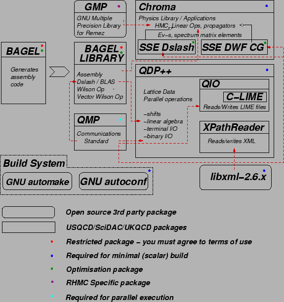

Next: General Concepts for Building
Up: Installation notes for the
Previous: Preliminaries
Contents
We show the software map in fig. 2.
Figure 1:
The chroma software map
|  |
As one can see the number and interrelationship of software components has
become quite complicated. Let us describe the various components from the
software map below:
- Gnu Autoconf and Automake:
- These packages are freely available from the GNU Operating System web-site. They are used in the build system for the
chroma software suite. While it is in theory possible to build the system
without having these installed, in practice it happens that some commits cause
the various makefiles and makefile templates to have earlier timestamps than
the important Makefile.am files, in which case the dependency tracking
of the build system will try to run automake and autoconf,
and life is considerably simplified if these packages are installed.
Some Linux and Unix systems have these packages installed, but often the versions as too old for compatibility. The minimal required versions are
- autoconf-2.58
- which can be found here.
- automake-1.9.3
- which can be found here
- Chroma:
- Chroma is (obviously) the key software
component, consisting of the various physics libraries and
applications. It can be obtained from the USQCD
Software Web Site
or from the
Jlab CVS
repository
(Status: building required)
- QDP++:
- QDP is an integral part of the Chroma software system and implements Level 2 of the US SciDAC programme
QCD software infrastructure. It can be obtained from anonymous CVS at the Jlab (see this link for instructions) or the USQCD Software Web Site. This package subsumes auxiliary packages qio and xpath_reader which provide SciDAC standard I/O and a XML reading/writing library respectively. (Status: building required)
- QMP:
- QMP is SciDAC's message passing standard and is a key interface to allow the software to be portable to various parallel supercomputers. The intention of the SciDAC standard was that QMP be implemented by the machine providers, so on many machines you will find it already installed for you. If you are moving to a new machine, an MPI reference implementation is available from the USQCD Software Web site
or you can get
it from the Jlab CVS repository. Status
- building required on new parallel architectures. The MPI reference implementation is a good place to start.
- installed on Jlab Myrinet/Gig-E clusters
- installed on QCDOC machines as part of the QOS
You don't need this package if you are only doing a scalar workstation build
- libxml2:
- This package is shipped with most Linux and Unix systems as well as with Cygwin. It is the Gnome foundations open source XML parsing package, which QDP++ and Chroma use to read XML documents. On Cygwin machines, it may be possible that only the libxml2 applications are installed xmllint, xsltproc etc. In this case, the libxml2 libraries package must also be installed. The project also has a web page
where source distributions for the package may be found. When working with sources (eg on QCDOC) we generally use version 2.6.6. Previous versions have been known to contain the odd memory leak. Status
- Versions of various age usually installed on linux and Unix systems
- Library installation may be needed on Cygwin systems
- Building may be required on new machines (eg BlueGene)
- Should be installed on QCDOC machines, but if you are rolling your own chroma you may need to build it
- BAGEL and BAGEL Wilson Dslash:
- These packages provide assembler optimisations for linear algebra in QDP++,
the Wilson Dslash operator and a function for applying Wilson Dslash to a
vector of fermions. It is a key package for fast running on several RISC
based architectures especially QCDOC, BlueGene and IBM Power based machines
(although BAGEL also supports UltraSparcII, Alpha and Generic C (noarch)
targets). Currently BAGEL is not available for general release, but will
be available for general download soon. Status
- should be installed on QCDOC (eventually) it certainly is installed on the Edinburgh QCDOC.
- may need to install this if you are porting to a new machine (IBM Pseries, BlueGene/L and QCDOC or any of the other supported architectures)
This packages is not required for running, but without it on many targets
the code will run slowly.
- GMP:
- is the GNU Multiple Precision library. It is currently used in the Remez algorithm which is used in the Hybrid Monte Carlo code, to provide coefficients for the rational approximations needed to run single flavour simulations using RHMC. If it is not installed on your machine, you can get it from the GMP Web site. Status:
- This package is installed on the QCDOC machines as it is also used by the CPS
for its RHMC implementation.
- This package is often installed on Linux and other Unix (as well as Cygwin)
systems
- You may need to install this on new machines you are porting to if you
intend to run a single flavour simulation using rational approximations
You don't need to worry about this package unless you intend to do RHMC
simulations
The installation of autoconf and automake are straightforward,
as is the installation of libxml (except when building on QCDOC, I'll
get back to this later) and gmp. From here on, except when dealing with these packages for particular system reasons, I will assume that your system
has these packages installed, and I'll concentrate on QDP++ and Chroma.
Next: General Concepts for Building
Up: Installation notes for the
Previous: Preliminaries
Contents
Balint Joo
2005-04-11